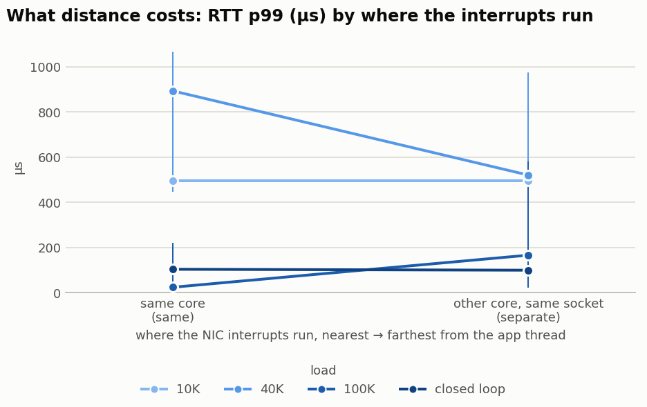
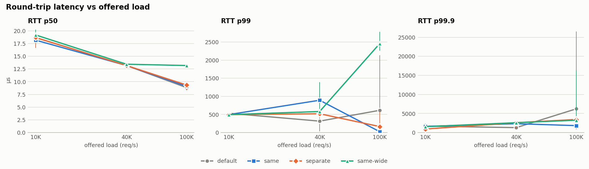
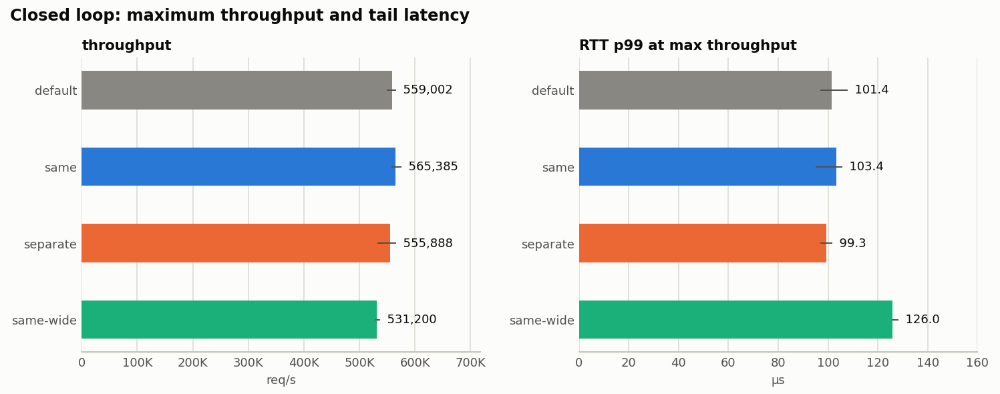
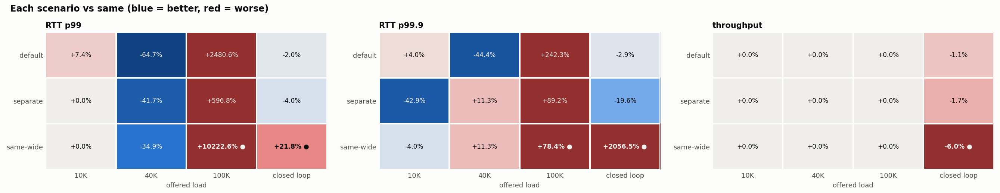
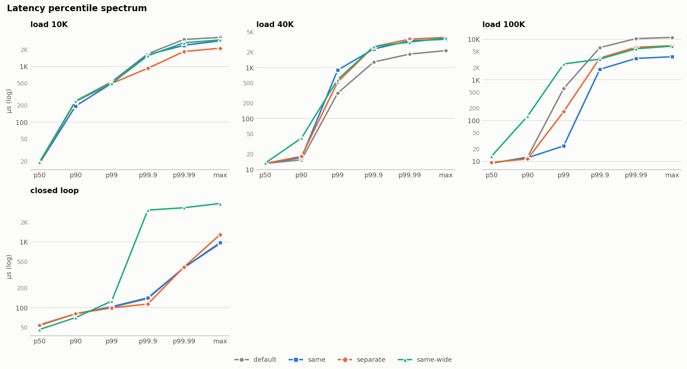
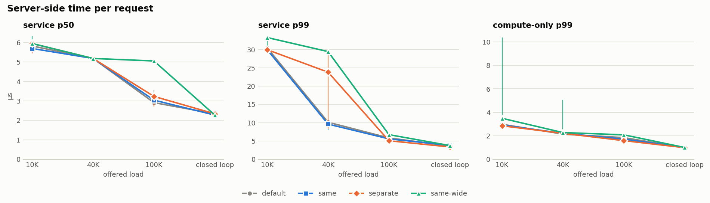
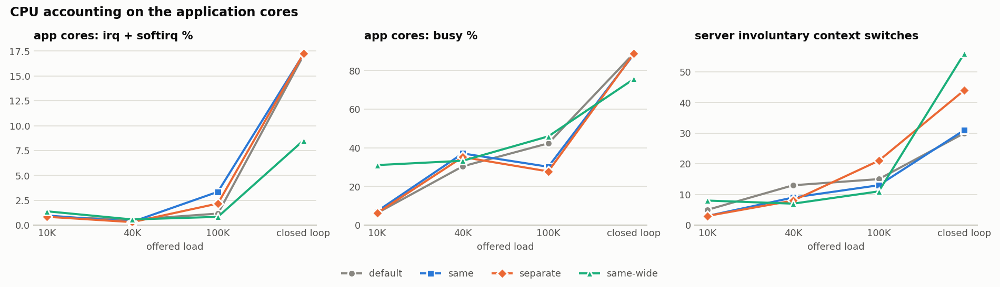
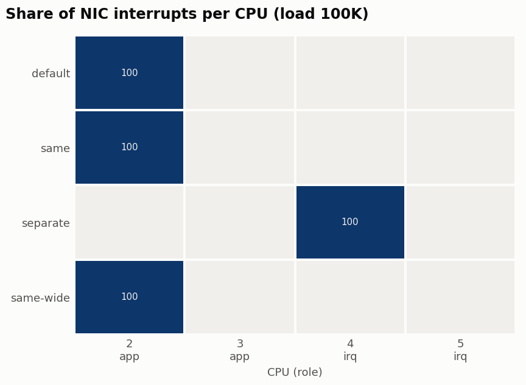

IRQ placement benchmark
sample-host · 20261020-214435 · 48 runs
Data quality warnings (9)
- ⛔ peer=local: loopback traffic never raises NIC interrupts. These results validate the tooling only, not IRQ placement.
- ⚠ rep 0, 40K, same-wide (block): the load generator fell 1.2 ms behind schedule, so it may be the bottleneck
- ⚠ rep 1, 10K, same-wide (block): the load generator fell 1.6 ms behind schedule, so it may be the bottleneck
- ⚠ rep 1, 40K, same-wide (block): the load generator fell 1.1 ms behind schedule, so it may be the bottleneck
- ⚠ rep 1, 100K, same (block): the load generator fell 1.4 ms behind schedule, so it may be the bottleneck
- ⚠ rep 1, 100K, same-wide (block): 0.11% requests lost
- ⚠ rep 2, 10K, default (block): the load generator fell 1.2 ms behind schedule, so it may be the bottleneck
- ⚠ rep 2, 100K, default (block): 0.80% requests lost
- ⚠ rep 2, 100K, same-wide (block): the load generator fell 1.2 ms behind schedule, so it may be the bottleneck
Verdict: interrupt proximity vs separate cores
No clear difference between proximity and separate cores at any load tested (checked in order: loss (%) → RTT p99 (µs) → RTT p99.9 (µs)).
Proximity (same) runs NIC interrupts on the application's own cores. Separate runs them on dedicated cores. Each load is decided by the first of these that differs clearly (non-overlapping min–max across repetitions): loss (%) → RTT p99 (µs) → RTT p99.9 (µs). Missed data comes first because a feed handler that drops updates has failed, however fast it is.
| load | proximity (same) RTT p99 (µs) | separate cores RTT p99 (µs) | verdict | RTT p99.9 (µs): separate vs same | throughput (req/s): separate vs same | proximity achieved |
|---|---|---|---|---|---|---|
| block · 10K | 495.6 | 495.6 | no clear difference | -42.9% | +0.0% | – |
| block · 40K | 892.9 | 520.2 | no clear difference | +11.3% | +0.0% | – |
| block · 100K | 23.8 | 165.9 | no clear difference | +89.2% | +0.0% | – |
| block · closed loop | 103.4 | 99.3 | no clear difference | -19.6% | -1.7% | – |
Secondary columns: + means separate is higher than same; ● = clear. Proximity achieved = share of NIC interrupts in same that fired on a core running a busy application thread (under 80% means same wasn't really proximity).
What the scenarios mean
Each scenario changes only where the server threads and the NIC interrupts run; the workload is identical. The CPU boxes show this run's actual layout.
default: Baseline: leave interrupts wherever the system put them
Server threads are pinned to the app CPUs (2-3). The benchmark doesn't touch IRQ affinity or RPS; they stay exactly as found when the run started (irqbalance is stopped during the run). Interrupts were actually observed on CPU(s) 2,4.
- Question
- How much does deliberate placement gain over doing nothing?
- Upside
- No tuning, and it reflects what an untuned production host does.
- Downside
- Where the interrupts land is up to the driver and kernel, so the result can vary between hosts and reboots, and it may overlap the app cores by accident.
same: Co-located: application and interrupts share the same cores
Server threads and NIC interrupts are both on the app CPUs (2-3). Each interrupt is pinned to one of those CPUs, round robin. RPS (software receive steering) is set to the same CPUs as the interrupts, so protocol processing runs there too. CPU steering is on, so every request goes to the server thread on the same CPU that processed its packet in the kernel. The report checks how much of the interrupt work actually landed on the cores running the busy application threads ("proximity achieved").
- Question
- Is it better to keep packet processing and the application on one core?
- Upside
- The packet's data is still in that core's cache when the app reads it. There's no cross-core wake-up, because the interrupt wakes the core that will run the app. It uses the fewest cores.
- Downside
- Interrupt and softirq work steals cycles from the application and evicts its cache. Under heavy load the network stack and the app compete for the same CPU, which usually shows up as a worse tail (p99/p99.9) and higher service time.
separate: Isolated: interrupts get their own dedicated cores
Server threads are on the app CPUs (2-3). NIC interrupts are on separate IRQ CPUs (4-5). RPS (software receive steering) is set to the same CPUs as the interrupts, so protocol processing runs there too.
- Question
- Does keeping interrupts off the application's cores improve latency or throughput?
- Upside
- The app cores do no interrupt work, so service time stays stable and tail latency under load is usually better.
- Downside
- Every request crosses cores: the IRQ core processes the packet and then wakes the app thread on another core (an IPI), and the packet data has to move between caches. It also uses 2 extra core(s) compared with
same.
same-wide: Fairness check: same core budget as separate, but shared
Uses the same total CPUs as separate (2-5), with one server thread per CPU and the interrupts spread over all of them. RPS (software receive steering) is set to the same CPUs as the interrupts, so protocol processing runs there too.
- Question
- Does
separatewin because isolation helps, or only because it had more cores? - Upside
- Puts
sameandseparateon an equal hardware budget, which makes it the fair comparison forseparate. - Downside
- It runs more server threads than the other scenarios, so its per-thread load is lower and it isn't directly comparable to
same.
How to read the comparison
Every Δ is relative to same. separate vs same is the core question, and separate vs same-wide checks whether a gain comes from isolation or just from more cores.
| If you see | It means |
|---|---|
separate clearly better than both same and same-wide | Isolation itself helps, so dedicate cores to interrupts. |
separate better than same but not same-wide | The gain came from having more cores, not from isolation. Sharing all the cores is just as good. |
same better than or equal to separate | Co-locate: cache locality and no cross-core wake-up outweigh the interference, and you save cores. This is typical at low or moderate load with blocking servers. |
| The answer changes with load | Pick by your operating point. same often wins at low load and separate at high load, so look at the load where your service actually runs. |
| Everything is 'within noise' | Placement doesn't matter for this workload at this load. Add reps, raise the load, or increase --work-lines before concluding. |
Findings
Based on client p99 round-trip latency. A result is clear when the repetitions' min–max ranges don't overlap.
Charts








Summary table
Median across repetitions, with min–max below. Click a header to sort.
| mode | load | scenario | reps | throughput (req/s) | RTT p50 (µs) | RTT p99 (µs) | RTT p99.9 (µs) | RTT p99.99 (µs) | service p50 (µs) | service p99 (µs) | work p99 (µs) | loss (%) | app cores busy (%) | app cores irq+softirq (%) | IRQ cores busy (%) | NIC IRQs on target (%) | involuntary ctx switches | AWS allowance exceeded |
|---|---|---|---|---|---|---|---|---|---|---|---|---|---|---|---|---|---|---|
| block | 10K | default | 3 | 10,000 | 18.7 | 532.5 479.2–548.9 | 1,687.6 1,065.0–2,048.0 | 3,047.4 1,589.2–3,178.5 | 5.82 5.70–5.95 | 30.46 30.46–30.98 | 2.98 2.85–2.98 | 0.000 | 6.2 4.9–7.2 | 0.84 0.83–1.38 | – | 100.0 | 5 2–5 | 0 |
| block | 10K | same | 3 | 10,000 | 18.2 18.2–18.7 | 495.6 479.2–565.2 | 1,622.0 1,359.9–2,392.1 | 2,392.1 2,195.5–3,113.0 | 5.70 5.70–5.82 | 29.95 29.95–30.98 | 2.91 2.59–2.98 | 0.000 | 7.2 5.0–9.4 | 0.97 0.80–0.98 | – | 100.0 | 3 2–8 | 0 |
| block | 10K | separate | 3 | 10,000 | 18.7 16.6–18.7 | 495.6 479.2–581.6 | 925.7 614.4–1,753.1 | 1,851.4 663.6–2,129.9 | 5.95 5.44–5.95 | 29.95 29.44–30.46 | 2.85 2.46–3.10 | 0.000 | 6.3 5.2–6.8 | 0.84 0.42–1.11 | 51.8 51.0–52.7 | 100.0 | 3 2–4 | 0 |
| block | 10K | same-wide | 3 | 10,000 | 19.2 18.7–20.2 | 495.6 479.2–532.5 | 1,556.5 1,065.0–1,785.9 | 2,654.2 1,753.1–2,785.3 | 5.95 5.57–6.34 | 33.28 30.98–33.28 | 3.49 3.42–10.37 | 0.000 | 31.1 30.9–41.0 | 1.39 0.75–1.51 | – | 100.0 | 8 4–9 | 0 |
| block | 40K | default | 3 | 40,000 | 13.2 13.2–13.4 | 315.4 37.4–712.7 | 1,294.3 974.8–2,129.9 | 1,851.4 1,523.7–3,375.1 | 5.18 | 10.11 8.00–14.72 | 2.14 2.08–2.21 | 0.000 | 30.4 2.5–36.6 | 0.55 0.16–23.32 | 5.4 | 100.0 | 13 3–15 | 0 |
| block | 40K | same | 3 | 40,000 | 13.2 13.2–13.4 | 892.9 446.5–1,065.0 | 2,326.5 1,687.6–3,178.5 | 3,375.1 2,457.6–5,963.8 | 5.18 | 9.60 7.87–12.93 | 2.21 2.14–2.27 | 0.000 | 37.1 9.0–37.2 | 0.33 0.32–0.81 | – | 100.0 | 9 4–13 | 0 |
| block | 40K | separate | 3 | 40,000 | 13.2 13.2–13.4 | 520.2 471.0–974.8 | 2,588.7 1,130.5–2,654.2 | 3,637.2 1,753.1–4,161.5 | 5.18 | 23.81 8.32–28.42 | 2.21 2.14–2.21 | 0.000 | 35.2 4.6–36.0 | 0.30 0.22–1.52 | 52.4 52.4–53.7 | 100.0 | 8 5–11 | 0 |
| block | 40K | same-wide | 3 | 40,000 | 13.4 13.2–13.4 | 581.6 471.0–1,392.6 | 2,588.7 1,949.7–2,916.4 | 3,178.5 3,047.4–3,571.7 | 5.18 5.18–5.31 | 29.44 28.93–29.44 | 2.27 2.27–5.06 | 0.000 | 33.3 29.0–43.6 | 0.57 0.23–4.28 | – | 100.0 | 7 7–26 | 0 |
| block | 100K | default | 3 | 100,000 99,200–100,000 | 8.8 8.6–9.6 | 614.4 16.0–2,129.9 | 6,225.9 1,523.7–26,476.5 | 10,354.7 3,113.0–31,195.1 | 2.91 2.78–3.55 | 5.82 5.06–6.59 | 1.84 1.55–2.00 | 0.000 0.000–0.800 | 42.3 14.9–43.1 | 1.16 0.24–1.67 | 100.0 | 100.0 | 15 13–19 | 0 |
| block | 100K | same | 3 | 100,000 | 9.1 8.3–9.6 | 23.8 17.2–219.1 | 1,818.6 1,261.6–1,818.6 | 3,375.1 2,080.8–4,096.0 | 3.04 2.72–3.23 | 5.57 5.18–5.70 | 1.71 1.58–1.71 | 0.000 | 30.2 14.7–42.1 | 3.35 0.64–3.99 | – | 100.0 | 13 12–17 | 0 |
| block | 100K | separate | 3 | 100,000 99,986–100,000 | 9.3 8.3–9.3 | 165.9 23.3–581.6 | 3,440.6 892.9–5,308.4 | 6,357.0 1,392.6–9,568.3 | 3.23 2.72–3.23 | 5.06 5.06–6.59 | 1.58 1.55–2.03 | 0.000 0.000–0.014 | 27.8 16.6–42.8 | 2.17 1.87–15.89 | 52.5 52.3–53.5 | 100.0 | 21 9–25 | 0 |
| block | 100K | same-wide | 3 | 100,000 99,894–100,000 | 13.2 12.9–13.2 | 2,457.6 2,261.0–2,785.3 | 3,244.0 3,113.0–16,384.0 | 5,832.7 3,506.2–23,330.8 | 5.06 | 6.72 6.59–6.98 | 2.08 2.03–2.08 | 0.000 0.000–0.106 | 45.9 44.6–46.1 | 0.83 0.33–3.66 | – | 100.0 | 11 8–21 | 0 |
| block | closed loop | default | 3 | 559,002 550,219–565,234 | 54.8 52.7–55.8 | 101.4 97.3–107.5 | 137.2 113.7–149.5 | 405.5 219.1–413.7 | 2.34 2.27–2.34 | 3.62 3.23–3.62 | 0.98 0.92–1.02 | 0.000 | 88.9 88.5–91.2 | 17.07 16.86–17.62 | – | 100.0 | 30 27–66 | 0 |
| block | closed loop | same | 3 | 565,385 558,426–573,962 | 53.8 49.7–60.9 | 103.4 95.2–105.5 | 141.3 115.7–165.9 | 405.5 206.8–548.9 | 2.27 2.27–2.34 | 3.81 3.68–3.87 | 1.00 1.00–1.04 | 0.000 | 88.4 88.1–88.8 | 17.19 16.73–17.24 | – | 100.0 | 31 28–41 | 0 |
| block | closed loop | separate | 3 | 555,888 533,772–564,765 | 53.8 52.7–56.8 | 99.3 97.3–101.4 | 113.7 109.6–165.9 | 413.7 274.4–446.5 | 2.34 2.34–2.46 | 3.36 3.36–3.55 | 0.98 0.94–1.02 | 0.000 | 88.8 88.4–89.7 | 17.24 17.20–17.58 | 52.2 51.5–52.4 | 100.0 | 44 26–47 | 0 |
| block | closed loop | same-wide | 3 | 531,200 530,067–535,702 | 46.6 46.6–48.6 | 126.0 126.0–128.0 | 3,047.4 | 3,309.6 3,309.6–3,506.2 | 2.27 2.21–2.34 | 3.74 3.49–4.29 | 1.00 0.98–1.17 | 0.000 | 75.6 75.6–75.8 | 8.52 8.42–8.64 | – | 100.0 | 56 41–61 | 0 |
Change vs same
| mode | load | scenario | throughput (req/s) Δ | RTT p50 (µs) Δ | RTT p99 (µs) Δ | RTT p99.9 (µs) Δ | service p99 (µs) Δ |
|---|---|---|---|---|---|---|---|
| block | 10K | default | +0.0% | +2.8% | +7.4% | +4.0% | +1.7% |
| block | 10K | separate | +0.0% | +2.8% | +0.0% | -42.9% | +0.0% |
| block | 10K | same-wide | +0.0% | +5.6% | +0.0% | -4.0% | +11.1% |
| block | 40K | default | +0.0% | +0.0% | -64.7% | -44.4% | +5.3% |
| block | 40K | separate | +0.0% | +0.0% | -41.7% | +11.3% | +148.0% |
| block | 40K | same-wide | +0.0% | +1.9% | -34.9% | +11.3% | +206.7% ● |
| block | 100K | default | +0.0% | -2.8% | +2480.6% | +242.3% | +4.6% |
| block | 100K | separate | +0.0% | +2.8% | +596.8% | +89.2% | -9.2% |
| block | 100K | same-wide | +0.0% | +45.1% ● | +10222.6% ● | +78.4% ● | +20.7% ● |
| block | closed loop | default | -1.1% | +1.9% | -2.0% | -2.9% | -5.0% ● |
| block | closed loop | separate | -1.7% | +0.0% | -4.0% | -19.6% | -11.8% ● |
| block | closed loop | same-wide | -6.0% ● | -13.3% ● | +21.8% ● | +2056.5% ● | -1.7% |
● = clear (non-overlapping rep ranges). Green = better, red = worse.
Setup
| Host | sample-host |
| AWS | n/a |
| CPU | Intel(R) Core(TM) Ultra 9 285H |
| Kernel | 6.17.0-35-generic |
| Cmdline | (redacted) |
| Governors | ['powersave'] |
| NUMA | {'node0': '0-15'} |
| SMT active | 0 |
| App CPUs | 2,3 |
| IRQ CPUs | 4,5 |
| Interface | bond0 |
| Peer | local |
| RPS | auto |
| Channels | as found |
| Protocol | udp |
| Server mode | block |
| CPU steering | True |
| Work | 256 cache lines / 512 KiB working set |
| Messages | 64 B request / 64 B response |
| Load | 2 client threads × 16 sockets, uniform arrivals, closed-loop outstanding 1 |
| Timing | 3 reps × 3.0 s (+0.5 s warm-up), seed 1 |
| device | driver | NUMA | rx queues | IRQs | Mb/s |
|---|---|---|---|---|---|
| enp44s0 | r8169 | -1 | 1 | [158] | 2500 |
Raw runs
All 48 runs, in execution order
| # | rep | load | scenario | throughput (req/s) | RTT p50 (µs) | RTT p99 (µs) | RTT p99.9 (µs) | RTT max (µs) | service p99 (µs) | loss (%) | NIC IRQs | on target % | IRQs by CPU |
|---|---|---|---|---|---|---|---|---|---|---|---|---|---|
| 1 | 0 | 10K | same-wide | 10,000 | 18.7 | 532.5 | 1,785.9 | 3,104.4 | 33.28 | 0.000 | 1,080 | 100.0 | 2:1080 |
| 2 | 0 | 10K | default | 10,000 | 18.7 | 548.9 | 1,687.6 | 3,316.6 | 30.98 | 0.000 | 346 | 100.0 | 2:346 |
| 3 | 0 | 10K | separate | 10,000 | 16.6 | 581.6 | 1,753.1 | 2,343.8 | 29.44 | 0.000 | 349 | 100.0 | 4:349 |
| 4 | 0 | 10K | same | 10,000 | 18.7 | 565.2 | 1,622.0 | 2,880.7 | 30.98 | 0.000 | 868 | 100.0 | 2:868 |
| 5 | 0 | 40K | same-wide | 40,000 | 13.2 | 1,392.6 | 2,916.4 | 3,997.5 | 29.44 | 0.000 | 486 | 100.0 | 2:486 |
| 6 | 0 | 40K | same | 40,000 | 13.2 | 446.5 | 1,687.6 | 2,847.5 | 9.60 | 0.000 | 276 | 100.0 | 2:276 |
| 7 | 0 | 40K | default | 40,000 | 13.2 | 37.4 | 974.8 | 1,735.2 | 10.11 | 0.000 | 285 | 100.0 | 2:285 |
| 8 | 0 | 40K | separate | 40,000 | 13.2 | 471.0 | 1,130.5 | 1,985.8 | 28.42 | 0.000 | 212 | 100.0 | 4:212 |
| 9 | 0 | 100K | default | 100,000 | 8.6 | 16.0 | 1,523.7 | 3,469.4 | 5.82 | 0.000 | 305 | 100.0 | 4:305 |
| 10 | 0 | 100K | separate | 100,000 | 8.3 | 581.6 | 3,440.6 | 6,945.0 | 6.59 | 0.000 | 318 | 100.0 | 4:318 |
| 11 | 0 | 100K | same | 100,000 | 8.3 | 23.8 | 1,818.6 | 3,713.6 | 5.70 | 0.000 | 1,066 | 100.0 | 2:1066 |
| 12 | 0 | 100K | same-wide | 100,000 | 12.9 | 2,457.6 | 3,244.0 | 6,760.3 | 6.59 | 0.000 | 467 | 100.0 | 2:467 |
| 13 | 0 | closed loop | separate | 533,772 | 56.8 | 97.3 | 109.6 | 831.4 | 3.36 | 0.000 | 1,061 | 100.0 | 4:1061 |
| 14 | 0 | closed loop | same-wide | 535,702 | 46.6 | 128.0 | 3,047.4 | 3,842.0 | 4.29 | 0.000 | 324 | 100.0 | 2:324 |
| 15 | 0 | closed loop | default | 565,234 | 52.7 | 107.5 | 137.2 | 938.1 | 3.62 | 0.000 | 406 | 100.0 | 2:406 |
| 16 | 0 | closed loop | same | 565,385 | 60.9 | 105.5 | 165.9 | 881.5 | 3.68 | 0.000 | 981 | 100.0 | 2:981 |
| 17 | 1 | 10K | same-wide | 10,000 | 20.2 | 495.6 | 1,065.0 | 2,132.9 | 30.98 | 0.000 | 320 | 100.0 | 2:320 |
| 18 | 1 | 10K | separate | 10,000 | 18.7 | 479.2 | 614.4 | 989.8 | 29.95 | 0.000 | 247 | 100.0 | 4:247 |
| 19 | 1 | 10K | same | 10,000 | 18.2 | 495.6 | 2,392.1 | 3,343.9 | 29.95 | 0.000 | 972 | 100.0 | 2:972 |
| 20 | 1 | 10K | default | 10,000 | 18.7 | 532.5 | 2,048.0 | 3,375.7 | 30.46 | 0.000 | 202 | 100.0 | 2:202 |
| 21 | 1 | 40K | same-wide | 40,000 | 13.4 | 471.0 | 1,949.7 | 3,828.7 | 29.44 | 0.000 | 376 | 100.0 | 2:376 |
| 22 | 1 | 40K | same | 40,000 | 13.4 | 892.9 | 2,326.5 | 3,610.8 | 12.93 | 0.000 | 1,071 | 100.0 | 2:1071 |
| 23 | 1 | 40K | separate | 40,000 | 13.4 | 974.8 | 2,654.2 | 4,486.9 | 8.32 | 0.000 | 307 | 100.0 | 4:307 |
| 24 | 1 | 40K | default | 40,000 | 13.2 | 315.4 | 1,294.3 | 2,165.1 | 8.00 | 0.000 | 281 | 100.0 | 4:281 |
| 25 | 1 | 100K | same | 100,000 | 9.6 | 219.1 | 1,818.6 | 4,434.7 | 5.18 | 0.000 | 382 | 100.0 | 2:382 |
| 26 | 1 | 100K | default | 100,000 | 8.8 | 614.4 | 6,225.9 | 11,086.7 | 6.59 | 0.000 | 311 | 100.0 | 2:311 |
| 27 | 1 | 100K | same-wide | 99,894 | 13.2 | 2,785.3 | 16,384.0 | 23,899.5 | 6.72 | 0.106 | 322 | 100.0 | 2:322 |
| 28 | 1 | 100K | separate | 100,000 | 9.3 | 23.3 | 892.9 | 1,573.6 | 5.06 | 0.000 | 1,093 | 100.0 | 4:1093 |
| 29 | 1 | closed loop | separate | 564,765 | 52.7 | 101.4 | 113.7 | 7,572.4 | 3.36 | 0.000 | 284 | 100.0 | 4:284 |
| 30 | 1 | closed loop | same-wide | 531,200 | 46.6 | 126.0 | 3,047.4 | 3,860.7 | 3.74 | 0.000 | 944 | 100.0 | 2:944 |
| 31 | 1 | closed loop | same | 558,426 | 53.8 | 103.4 | 141.3 | 13,400.2 | 3.81 | 0.000 | 238 | 100.0 | 2:238 |
| 32 | 1 | closed loop | default | 559,002 | 54.8 | 101.4 | 113.7 | 604.9 | 3.23 | 0.000 | 400 | 100.0 | 2:400 |
| 33 | 2 | 10K | same | 10,000 | 18.2 | 479.2 | 1,359.9 | 2,850.6 | 29.95 | 0.000 | 299 | 100.0 | 2:299 |
| 34 | 2 | 10K | separate | 10,000 | 18.7 | 495.6 | 925.7 | 2,122.3 | 30.46 | 0.000 | 1,117 | 100.0 | 4:1117 |
| 35 | 2 | 10K | same-wide | 10,000 | 19.2 | 479.2 | 1,556.5 | 2,993.5 | 33.28 | 0.000 | 413 | 100.0 | 2:413 |
| 36 | 2 | 10K | default | 10,000 | 18.7 | 479.2 | 1,065.0 | 1,867.6 | 30.46 | 0.000 | 850 | 100.0 | 2:850 |
| 37 | 2 | 40K | same | 40,000 | 13.2 | 1,065.0 | 3,178.5 | 6,372.2 | 7.87 | 0.000 | 270 | 100.0 | 2:270 |
| 38 | 2 | 40K | default | 40,000 | 13.4 | 712.7 | 2,129.9 | 3,547.5 | 14.72 | 0.000 | 404 | 100.0 | 2:404 |
| 39 | 2 | 40K | separate | 40,000 | 13.2 | 520.2 | 2,588.7 | 3,928.0 | 23.81 | 0.000 | 1,016 | 100.0 | 4:1016 |
| 40 | 2 | 40K | same-wide | 40,000 | 13.4 | 581.6 | 2,588.7 | 3,572.8 | 28.93 | 0.000 | 232 | 100.0 | 2:232 |
| 41 | 2 | 100K | same | 100,000 | 9.1 | 17.2 | 1,261.6 | 2,408.8 | 5.57 | 0.000 | 951 | 100.0 | 2:951 |
| 42 | 2 | 100K | default | 99,200 | 9.6 | 2,129.9 | 26,476.5 | 31,530.1 | 5.06 | 0.800 | 264 | 100.0 | 2:264 |
| 43 | 2 | 100K | separate | 99,986 | 9.3 | 165.9 | 5,308.4 | 10,023.4 | 5.06 | 0.014 | 282 | 100.0 | 4:282 |
| 44 | 2 | 100K | same-wide | 100,000 | 13.2 | 2,261.0 | 3,113.0 | 4,153.4 | 6.98 | 0.000 | 939 | 100.0 | 2:939 |
| 45 | 2 | closed loop | default | 550,219 | 55.8 | 97.3 | 149.5 | 1,255.5 | 3.62 | 0.000 | 409 | 100.0 | 2:409 |
| 46 | 2 | closed loop | separate | 555,888 | 53.8 | 99.3 | 165.9 | 1,293.5 | 3.55 | 0.000 | 312 | 100.0 | 4:312 |
| 47 | 2 | closed loop | same-wide | 530,067 | 48.6 | 126.0 | 3,047.4 | 3,838.1 | 3.49 | 0.000 | 1,015 | 100.0 | 2:1015 |
| 48 | 2 | closed loop | same | 573,962 | 49.7 | 95.2 | 115.7 | 975.6 | 3.87 | 0.000 | 425 | 100.0 | 2:425 |
Generated by irqreport.py from /opt/InterBenchmarks/examples/sample-loopback. PNG charts are in charts/.